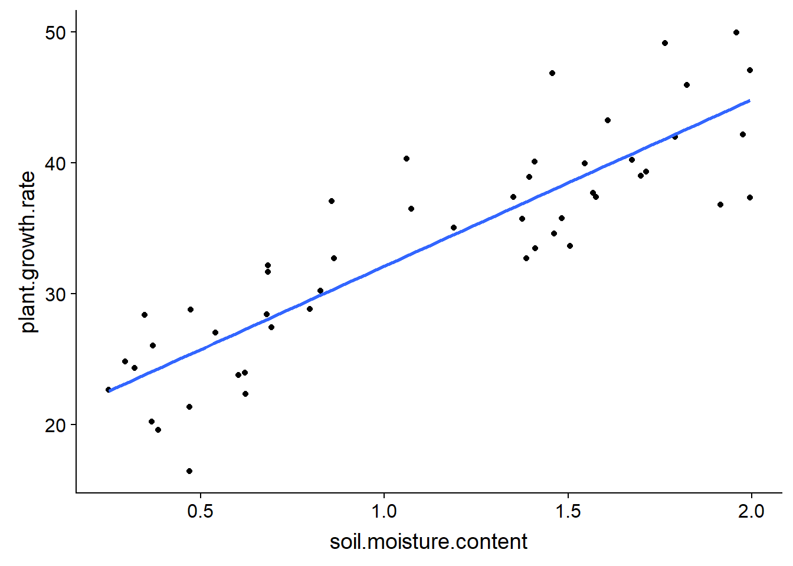
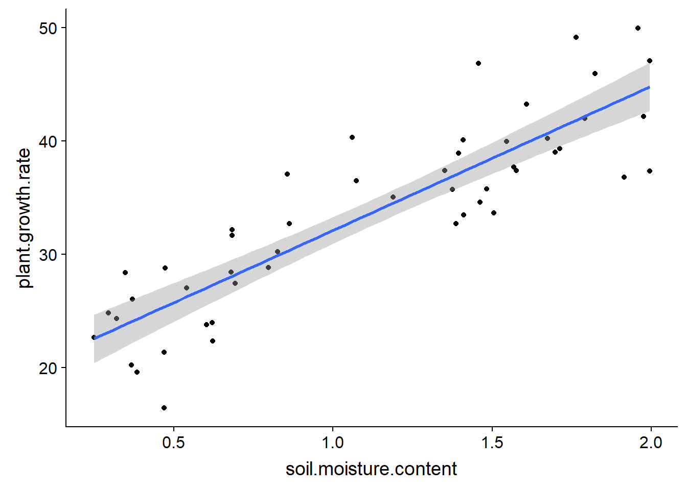
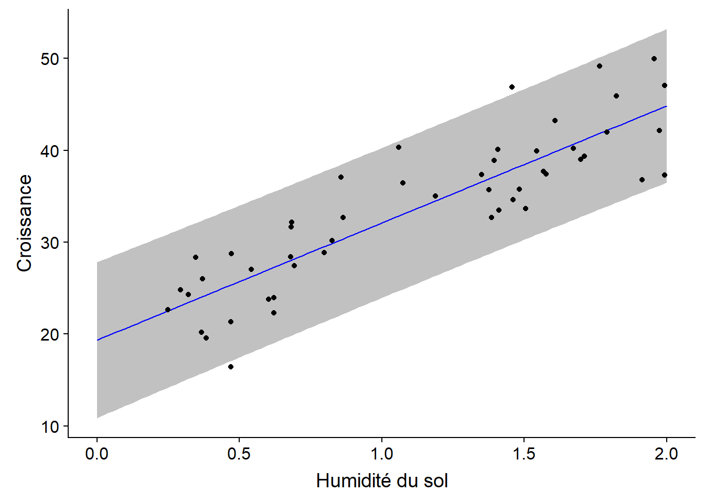
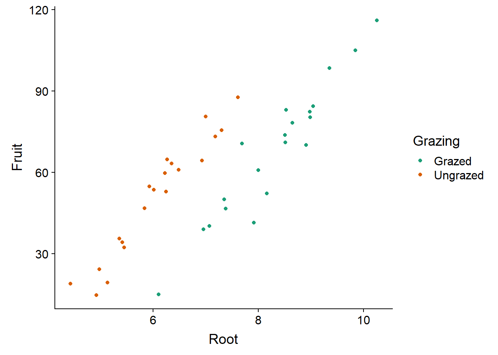
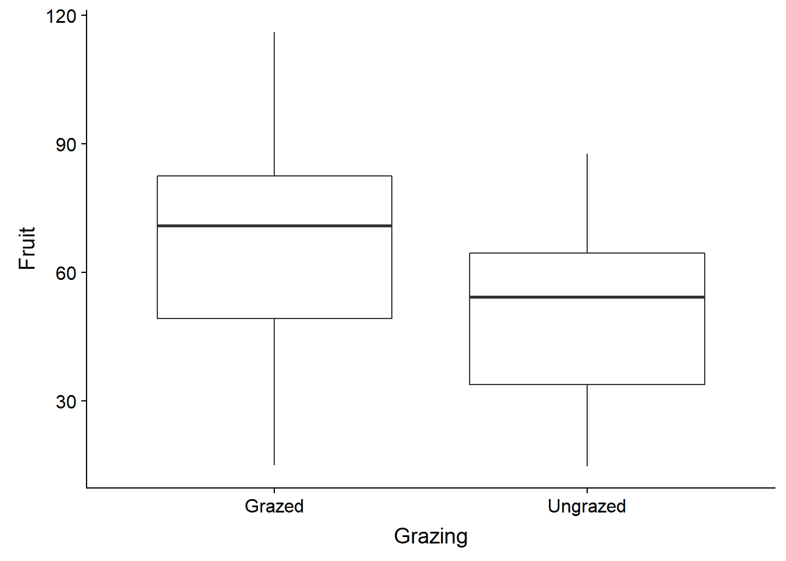
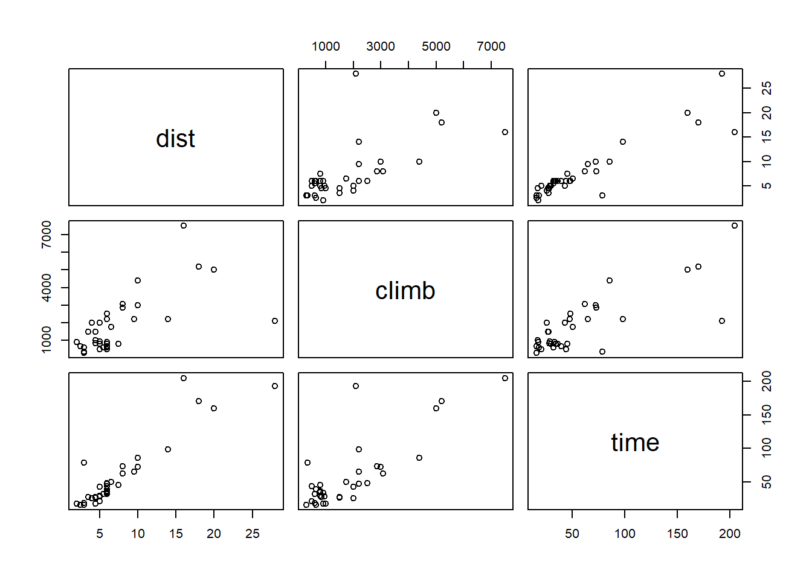

Régression linéaire
15 octobre 2018
Objectifs
Estimer et interpréter les paramètres d’une régression linéaire simple et ceux d’une régression linéaire multiple, avec ou sans interactions.
Vérifier les suppositions d’un modèle de régression à partir des graphiques de diagnostic.
Différencier l’intervalle de confiance d’une droite de régression et l’intervalle de prédiction de nouvelles observations.
Identifier les problèmes dûs à la collinéarité de plusieurs prédicteurs.
Régression: Vue d’ensemble
Les six prochains cours porteront sur les modèles de régression. Ces modèles représentent la relation mathématique entre une variable réponse et une ou plusieurs variables nommées prédicteurs.
L’analyse de régression est notamment utile dans les cas suivants:
Analyser les résultats d’une expérience lorsqu’une ou plusieurs variables de traitement sont numériques (ex.: température, dose).
Séparer l’effet de traitements discrets (variables catégorielles) de celui d’autres conditions expérimentales représentées par des variables numériques. Dans ce contexte, on parle souvent d’analyse de la covariance.
Déterminer l’importance des associations entre des variables mesurées dans la nature (sans supposer de lien de causalité).
Utiliser les associations entre prédicteurs et réponse afin de prédire la valeur de cette dernière pour de nouvelles observations.
Le modèle mathématique demeure le même pour toutes ces situations, elles diffèrent donc dans l’interprétation et l’utilisation des résultats.
Régression linéaire simple
La régression linéaire simple désigne le cas où il y a un seul prédicteur numérique (\(x\)).
\[ y = \beta_0 + \beta_1 x + \epsilon \]
Rappelons-nous que \(\beta_0\) et \(\beta_1\) sont les coefficients de la régression qui seront estimés à partir des données, tandis que \(\epsilon\) est le résidu aléatoire qui suit une distribution normale centrée sur zéro: \(N(0, \sigma)\).
Le modèle signifie que pour une valeur de \(x\) donnée, la réponse \(y\) suit une distribution normale de moyenne \(\mu = \beta_0 + \beta_1 x\) et d’écart-type \(\sigma\). L’ordonnée à l’origine \(\beta_0\) est la valeur moyenne de \(y\) lorsque \(x = 0\), tandis que la pente \(\beta_1\) est la différence moyenne de \(y\) entre deux observations qui diffèrent par 1 unité de \(x\).
Méthode des moindres carrés
Exemple
Le tableau de données plant_growth_rate.csv (tiré du livre de Beckerman, Childs et Petchey, Getting Started with R, An Introduction for Biologists) contient des mesures de croissance d’une plante en fonction de l’humidité du sol.
pgr <- read.csv("../donnees/plant_growth_rate.csv")
str(pgr)## 'data.frame': 50 obs. of 2 variables:
## $ soil.moisture.content: num 0.47 0.541 1.698 0.826 0.857 ...
## $ plant.growth.rate : num 21.3 27 39 30.2 37.1 ...Graphiquement, l’estimation des coefficients de la régression linéaire consiste à trouver la droite qui passe le plus “près” des points du graphique de \(y\) vs. \(x\).
ggplot(pgr, aes(x = soil.moisture.content, y = plant.growth.rate)) +
geom_point() +
geom_smooth(method = "lm", se = FALSE)
Plus précisément, il est possible de démontrer que les meilleurs estimateurs sans biais des paramètres de la régression linéaire sont ceux qui minimisent la somme du carré des résidus. Il s’agit de la méthode des moindres carrés.
Pour une série de \(n\) observations de \(x\) et \(y\), cette somme du carré des résidus correspond à:
\[ \sum_{k = 1}^n \epsilon_k^2 = \sum_{k = 1}^n (y_k - (\beta_0 + \beta_1 x_k))^2 \]
Les estimés \(\hat{\beta_0}\) et \(\hat{\beta_1}\) qui minimisent cette somme sont obtenus à partir du calcul différentiel. (Il s’agit des valeurs pour lesquelles les dérivées partielles de la somme en fonction de chaque coefficient sont égales à zéro.)
L’estimateur de la pente \(\beta_1\) est égal à la covariance de \(x\) et \(y\) divisée par la variance de \(x\):
\[\hat{\beta_1} = \frac{\sum_{k = 1}^n (x_k - \bar{x})(y_k - \bar{y})}{\sum_{k = 1}^n (x_k - \bar{x})^2}\]
Ici, \(\bar{x}\) et \(\bar{y}\) représentent les moyennes de \(x\) et \(y\), respectivement, pour l’ensemble des observations.
L’estimateur de l’ordonnée à l’origine \(\beta_0\) est égal à:
\[\hat{\beta_0} = \bar{y} - \hat{\beta_1} \bar{x}\]
Cette équation montre aussi que la droite de régression estimée passe par le point \((\bar{x}, \bar{y})\), le “centre de gravité” du nuage de points de \(x\) et \(y\).
Interprétations des résultats
En effectuant la régression sur l’exemple ci-dessus, nous obtenons:
mod <- lm(plant.growth.rate ~ soil.moisture.content, data = pgr)
summary(mod)##
## Call:
## lm(formula = plant.growth.rate ~ soil.moisture.content, data = pgr)
##
## Residuals:
## Min 1Q Median 3Q Max
## -8.9089 -3.0747 0.2261 2.6567 8.9406
##
## Coefficients:
## Estimate Std. Error t value Pr(>|t|)
## (Intercept) 19.348 1.283 15.08 <2e-16 ***
## soil.moisture.content 12.750 1.021 12.49 <2e-16 ***
## ---
## Signif. codes: 0 '***' 0.001 '**' 0.01 '*' 0.05 '.' 0.1 ' ' 1
##
## Residual standard error: 4.019 on 48 degrees of freedom
## Multiple R-squared: 0.7648, Adjusted R-squared: 0.7599
## F-statistic: 156.1 on 1 and 48 DF, p-value: < 2.2e-16Le tableau des coefficients inclut l’ordonnée à l’origine (Intercept) et l’effet de chaque prédicteur. Si les suppositions du modèle sont respectées (voir section ci-dessous), chaque estimé \(\hat{\beta}\) suit une distribution normale centrée sur la valeur du paramètre \(\beta\), avec une l’erreur-type indiquée dans le tableau. Ceci permet d’effectuer un test \(t\) pour l’hypothèse nulle \(\beta = 0\), avec une valeur \(p\) indiquée dans la dernière colonne.
Sous le tableau, Residual standard error correspond à l’écart-type des résidus du modèle, calculé avec 48 degrés de liberté (50 observations - 2 paramètres estimés).
sqrt(sum(mod$residuals^2) / 48)## [1] 4.019094Comme pour l’ANOVA, le coefficient de détermination (\(R^2\)) représente la fraction de la variance expliquée par le modèle.
\[ R^2 = 1 - \frac{\sum_{k=1}^n (y_k - \hat{y_k})^2}{\sum_{k=1}^n (y_k - \bar{y})^2} \]
Le numérateur est la somme des résidus au carré, car \(\hat{y_k} = \hat{\beta_0} + \hat{\beta_1} x_k\) est la valeur attendue (moyenne) pour \(y_k\) selon le modèle.
r2 <- 1 - sum(mod$residuals^2) / sum((pgr$plant.growth.rate - mean(pgr$plant.growth.rate))^2)
r2## [1] 0.764796Les valeurs attendues \(\hat{y_k}\) à chaque point sont enregistrées dans l’élément fitted.values du résultat de lm (ex.: mod$fitted.values).
Pour une régression linéaire simple, la racine carrée de \(R^2\) est égale à la corrélation entre \(x\) et \(y\).
cor_pgr <- cor(pgr$soil.moisture.content, pgr$plant.growth.rate)
all.equal(cor_pgr, sqrt(r2))## [1] TRUENote: Lorsqu’on compare des nombres réels dans R, il est préférable d’utiliser all.equal que ==. En raison de la précision limitée des calculs, les deux valeurs sont en fait presque égales, donc l’égalité exacte == retournerait FALSE.
cor_pgr - sqrt(r2)## [1] 1.110223e-16La dernière ligne du sommaire est un test \(F\) semblable à l’ANOVA. Lorsque nous n’avons qu’un seul prédicteur, ce test donne la même information que le test \(t\) pour ce prédicteur: la probabilité d’obtenir un effet estimé aussi loin de 0 si l’effet réel du prédicteur est 0.
Intervalle de confiance et intervalle de prédiction
Pour afficher la droite de régression sur un nuage de points entre \(x\) et \(y\) avec son intervalle de confiance, nous pouvons utiliser la fonction geom_smooth du package ggplot2, avec la méthode lm (modèle linéaire).
ggplot(pgr, aes(x = soil.moisture.content, y = plant.growth.rate)) +
geom_point() +
geom_smooth(method = "lm")
À chaque valeur de \(x\), la surface grise donne un intervalle de confiance pour la valeur moyenne de \(y\) selon le modèle linéaire. Par défaut, il s’agit d’un intervalle à 95%, ce qui peut être modifié avec l’argument level de geom_smooth.
Notez que l’intervalle de confiance devient plus large aux extrémités du graphique. Rappelez-vous que la droite de régression doit passer par le point \((\bar{x}, \bar{y})\), donc l’incertitude sur la pente fait “pivoter” la droite légèrement autour de ce point, ce qui génère une incertitude plus grande aux extrémités.
Supposons qu’en plus d’estimer la tendance moyenne entre \(x\) et \(y\), nous voulons prédire la valeur de \(y\) pour de nouvelles observations, en ne connaissant que la valeur de \(x\). Dans le code ci-dessous, nous créons un nouveau tableau de données pgr_nouv avec 101 valeurs de l’humidité du sol, puis nous appelons la fonction predict pour obtenir les prédiction de croissance selon le modèle mod, avec un intervalle de prédiction. Nous rattachons ensuite ces colonnes à pgr_nouv avec cbind.
pgr_nouv <- data.frame(soil.moisture.content = seq(0, 2, 0.02))
pgr_pred <- predict(mod, pgr_nouv, interval = "prediction")
pgr_nouv <- cbind(pgr_nouv, pgr_pred)
str(pgr_nouv)## 'data.frame': 101 obs. of 4 variables:
## $ soil.moisture.content: num 0 0.02 0.04 0.06 0.08 0.1 0.12 0.14 0.16 0.18 ...
## $ fit : num 19.3 19.6 19.9 20.1 20.4 ...
## $ lwr : num 10.9 11.1 11.4 11.7 11.9 ...
## $ upr : num 27.8 28.1 28.3 28.6 28.8 ...La colonne fit contient les valeurs prédites (qui correspondent aux points sur la droite de régression) tandis que lwr et upr sont les limites inférieure et supérieure de l’intervalle de prédiction à 95%.
Superposons maintenant la droite de régression, l’intervalle de prédiction (avec geom_ribbon) et le nuage de points:
ggplot(pgr_nouv, aes(x = soil.moisture.content)) +
labs(x = "Humidité du sol", y = "Croissance") +
geom_ribbon(aes(ymin = lwr, ymax = upr), alpha = 0.3) +
geom_line(aes(y = fit), color = "blue") +
geom_point(data = pgr, aes(y = plant.growth.rate))
Contrairement à l’intervalle de confiance qui représente l’incertitude sur la valeur moyenne de la réponse pour une certaine valeur du prédicteur, l’intervalle de prédiction représente l’incertitude sur la valeur de la réponse pour une observation individuelle. Ainsi, on s’attend à ce qu’environ 95% des points se retrouvent dans l’intervalle de prédiction, ce qui est le cas ici (48/50).
Note: En général, il n’est pas prudent d’utiliser le résultat d’une régression pour prédire la réponse pour des valeurs des prédicteurs hors de la plage des valeurs avec lesquelles le modèle a été estimé (dans l’exemple, pour des valeurs d’humidité > 2). Ces extrapolations sont moins fiables que les prédictions à l’intérieur de la plage des valeurs observées (interpolation). En particulier, une relation approximativement linéaire sur une échelle restreinte de valeurs de \(x\) peut devenir fortement non-linéaire lorsqu’on change d’échelle.
Suppositions du modèle de régression linéaire
Comme pour l’ANOVA, les résidus sont:
- indépendants et
- normalement distribués
- avec la même variance.
En plus:
- la relation entre la réponse moyenne et les prédicteurs est linéaire, et
- les prédicteurs sont mesurés sans erreur (ou cette erreur est négligeable par rapport aux autres erreurs du modèles).
Linéarité
Le critère de linéarité est moins contraignant qu’il n’y parait à prime abord. Les transformations de variables permettent de convertir une relation non-linéaire en relation linéaire. Par exemple, si \(y\) est la fonction d’une puissance à déterminer de \(x\):
\[ y = a x^b \]
alors en prenant le logarithme de chaque côté de l’équation, on obtient une relation linéaire:
\[ \log(y) = \log(a) + b \log(x) \]
En général, l’équation reliant \(x\) et \(y\) peut contenir des fonctions non-linéaires de \(x\), en autant qu’elle soit une fonction linéaire des coefficients. Par exemple, l’équation quadratrique:
\[ y = \beta_0 + \beta_1 x + \beta_2 x^2 \]
constitue un exemple de modèle linéaire; il s’agit d’une régression linéaire multiple, puisqu’on a deux prédicteurs, \(x\) et \(x^2\).
Indépendance des résidus
L’indépendance des résidus signifie que la portion des observations \(y\) non-expliquée par les prédicteurs \(x\) est indépendante d’une observation à l’autre.
En écologie, la non-indépendance des résidus est souvent due à une proximité de certaines observations dans l’espace et dans le temps. Par exemple, si les observations s’étalent sur plusieurs journées, les observations plus rapprochées dans le temps pourraient être plus semblables. On peut inclure dans le modèle les facteurs pouvant causer cette dépendance temporelle (ex.: météo) pour obtenir les résidus les plus indépendants possibles.
La non-indépendance des résidus ne biaise pas les estimés des coefficients du modèle, donc ceux-ci demeurent valides, mais leur incertitude sera sous-estimée. (On pourrait dire qu’un échantillon de mesures non-indépendantes est équivalent à un échantillon indépendant de plus petite taille.) Ainsi, les intervalles de confiance et les tests d’hypothèse sur la significativité des coefficients ne seront pas valides.
Graphiques de diagnostic
Voici les quatre graphiques de diagnostic obtenus avec la fonction plot appliquée au résultat de lm.

Les deux premiers graphiques correspondent à ceux déjà vus avec l’ANOVA. Pour le graphique des résidus vs. valeurs attendues (residuals vs. fitted), il faut faire particulièrement attention aux points suivants:
Les résidus doivent être dispersés aléatoirement autour de zéro. La présence d’une tendance (linéaire ou non) indique des effets systématiques ignorés par le modèle. Dans ce cas-ci, il est possible que nous ayons une légère tendance non-linéaire (quadratique) dans les résidus.
La variance des résidus doit être approximativement constante (homoscédasticité). Un type courant d’hétéroscédasticité survient lorsque la variance augmente avec la moyenne. Dans ce cas, le graphique des résidus vs. valeurs attendues a une forme d’entonnoir (la dispersion des points augmente le long de l’axe des \(x\)).
Le diagramme quantile-quantile permet de détecter des déviations systématiques de la normalité des résidus.
Le troisième graphique montre l’échelle des résidus (en valeur absolue) en fonction des valeurs attendues de \(y\). Ce graphique devrait aussi montrer une tendance si la variance n’est pas constante.
Effet de levier
Le dernier graphique montre l’effet de levier (leverage) des observations relativement à la valeur des résidus. Une observation avec un fort effet de levier a une plus grande influence sur les coefficients de la régression; cela se produit le plus souvent dans le cas d’observations isolées et loin de la moyenne des prédicteurs. Une observation éloignée de la moyenne (résidu positif ou négatif important) qui a aussi un fort effet de levier risque d’éloigner la droite de régression de la tendance générale indiquée par les autres données.
La distance de Cook (Cook’s distance) \(D\) est une mesure combinant l’effet de levier et la magnitude du résidu. Les droites pointillées sur le quatrième graphique permettent d’identifier les points problématiques qui dépassent une certaine valeur de \(D\), généralement \(D > 1\). Dans notre exemple précédent, aucun point n’a une grande influence, donc ces lignes pointillées se retrouvent en dehors de la partie visible du graphique.
Régression linéaire multiple
Le modèle de régression linéaire multiple représente la relation entre une variable réponse et \(m\) prédicteurs \(x_1\), \(x_2\), …, \(x_m\).
\[ y = \beta_0 + \beta_1 x_1 + \beta_2 x_2 + ... + \beta_m x_m + \epsilon = \beta_0 + \sum_{i = 1}^m \beta_i x_i + \epsilon \]
Comme dans le cas de la régression linéaire simple, les coefficients \(\beta\) peuvent être calculés à partir de la méthode des moindres carrés. Dans ce modèle, chaque coefficient \(\beta_i\) (sauf \(\beta_0\)) est la dérivée partielle de \(y\) par rapport à un prédicteur \(x_i\). En d’autres mots, ce coefficient représente la variation moyenne de \(y\) si \(x_i\) augmente d’une unité et que tous les autres prédicteurs restent constants.
Analyse de la covariance
Nous considérerons d’abord un modèle incluant un prédicteur catégoriel et un prédicteur numérique. Dans un contexte expérimental, ce type de modèle porte le nom d’analyse de la covariance (ANCOVA).
Le tableau de données compensation.csv est tiré du livre de Crawley, Statistics: An introduction using R. Il contient des données sur la masse des graines produites par une espèce de plante (Fruit) en fonction de la taille des racines (Root) et selon que la plante subisse ou non un pâturage (Grazing).
comp <- read.csv("../donnees/compensation.csv")
str(comp)## 'data.frame': 40 obs. of 3 variables:
## $ Root : num 6.22 6.49 4.92 5.13 5.42 ...
## $ Fruit : num 59.8 61 14.7 19.3 34.2 ...
## $ Grazing: Factor w/ 2 levels "Grazed","Ungrazed": 2 2 2 2 2 2 2 2 2 2 ...Inspectons d’abord les données.
ggplot(comp, aes(x = Root, y = Fruit, color = Grazing)) +
geom_point() +
scale_color_brewer(palette = "Dark2")
Le graphique montre bien l’existence d’une relation linéaire entre la taille des racines et la production de graines, ainsi que l’effet du traitement: pour la même taille des racines, le pâturage réduit la production de graines. Notez que si on n’avait pas mesuré les racines, on pourrait croire que l’effet du pâturage est positif.
ggplot(comp, aes(x = Grazing, y = Fruit)) +
geom_boxplot()
Cela est dû au fait que les plantes subissant le pâturage avaient (en moyenne) de plus grandes racines au départ. La taille des racines est donc une variable confondante dont il faut tenir compte pour bien évaluer l’effet du pâturage.
Voici un modèle linéaire où l’effet des deux prédicteurs est additif:
mod_comp <- lm(Fruit ~ Grazing + Root, data = comp)
summary(mod_comp)##
## Call:
## lm(formula = Fruit ~ Grazing + Root, data = comp)
##
## Residuals:
## Min 1Q Median 3Q Max
## -17.1920 -2.8224 0.3223 3.9144 17.3290
##
## Coefficients:
## Estimate Std. Error t value Pr(>|t|)
## (Intercept) -127.829 9.664 -13.23 1.35e-15 ***
## GrazingUngrazed 36.103 3.357 10.75 6.11e-13 ***
## Root 23.560 1.149 20.51 < 2e-16 ***
## ---
## Signif. codes: 0 '***' 0.001 '**' 0.01 '*' 0.05 '.' 0.1 ' ' 1
##
## Residual standard error: 6.747 on 37 degrees of freedom
## Multiple R-squared: 0.9291, Adjusted R-squared: 0.9252
## F-statistic: 242.3 on 2 and 37 DF, p-value: < 2.2e-16Interprétation des résultats
Si \(x_1\) est la variable de pâturage (0 = Grazed, 1 = Ungrazed selon le codage par défaut dans R) et que \(x_2\) est la taille des racines, l’expression mathématique de ce modèle est:
\[ y = \beta_0 + \beta_1 x_1 + \beta_2 x_2 + \epsilon \]
Pour simplifier l’interprétation des coefficients, on peut séparer le cas avec pâturage (\(x_1 = 0\)):
\[ y = \beta_0 + \beta_2 x_2 + \epsilon \]
du cas sans pâturage (\(x_1 = 1\)):
\[ y = \beta_0 + \beta_1 + \beta_2 x_2 + \epsilon \]
On peut maintenant intepréter les coefficients comme suit:
- \(\beta_0\) (
Interceptdans le tableau sommaire) est l’ordonnée à l’origine de la droite Fruit vs. Root avec pâturage. - \(\beta_1\) (
GrazingUngrazed) est l’effet de l’absence de pâturage sur l’ordonnée à l’origine de Fruit vs. Root. - \(\beta_2\) (
Root) est la pente de la droite Fruit vs. Root avec ou sans pâturage.
Puisque la pente est la même avec ou sans pâturage, le coefficient \(\beta_1\) correspond à une translation sur l’axe des \(y\) de la droite de régression. Ce modèle des effets additifs d’un traitement et d’une variable numérique est donc représenté par deux droites parallèles, ce qui correspond assez bien à notre visualisation des données. En outre, la valeur du \(R^2\) (0.93) indique que le modèle explique une grande partie de la variation observée dans les données.
Même une grande valeur de \(R^2\) ne signifie pas nécessairement que le modèle est approprié. Il faut toujours observer les graphiques de diagnostic.

Notez que le numéro de la rangée du tableau de données est indiqué à côté de certains points extrêmes, pour faciliter l’identification de points problématiques.
Le test \(F\) rapporté au bas du sommaire des résultats de lm correspond à l’hypothèse nulle d’absence d’effet pour tous les prédicteurs.
On peut aussi obtenir un tableau d’ANOVA conventionnel en appliquant la fonction anova au résultat de lm.
anova(mod_comp)## Analysis of Variance Table
##
## Response: Fruit
## Df Sum Sq Mean Sq F value Pr(>F)
## Grazing 1 2910.4 2910.4 63.929 1.397e-09 ***
## Root 1 19148.9 19148.9 420.616 < 2.2e-16 ***
## Residuals 37 1684.5 45.5
## ---
## Signif. codes: 0 '***' 0.001 '**' 0.01 '*' 0.05 '.' 0.1 ' ' 1Modèle avec interaction
Comme dans l’ANOVA, on peut inclure l’interaction entre deux variables du modèle avec le symbole *:
mod_comp_inter <- lm(Fruit ~ Grazing * Root, data = comp)
summary(mod_comp_inter)##
## Call:
## lm(formula = Fruit ~ Grazing * Root, data = comp)
##
## Residuals:
## Min 1Q Median 3Q Max
## -17.3177 -2.8320 0.1247 3.8511 17.1313
##
## Coefficients:
## Estimate Std. Error t value Pr(>|t|)
## (Intercept) -125.173 12.811 -9.771 1.15e-11 ***
## GrazingUngrazed 30.806 16.842 1.829 0.0757 .
## Root 23.240 1.531 15.182 < 2e-16 ***
## GrazingUngrazed:Root 0.756 2.354 0.321 0.7500
## ---
## Signif. codes: 0 '***' 0.001 '**' 0.01 '*' 0.05 '.' 0.1 ' ' 1
##
## Residual standard error: 6.831 on 36 degrees of freedom
## Multiple R-squared: 0.9293, Adjusted R-squared: 0.9234
## F-statistic: 157.6 on 3 and 36 DF, p-value: < 2.2e-16Si \(x_1\) est la variable de pâturage (0 = Grazed, 1 = Ungrazed selon le codage par défaut dans R) et que \(x_2\) est la taille des racines, l’expression mathématique de ce modèle est:
\[ y = \beta_0 + \beta_1 x_1 + \beta_2 x_2 + \beta_{12} x_1 x_2 + \epsilon \]
L’interaction est donc équivalente à l’ajout d’un nouveau prédicteur au modèle, égal au produit des deux variables qui interagissent. Séparons de nouveau en deux équations selon le traitement:
Avec pâturage (\(x_1 = 0\)):
\[ y = \beta_0 + \beta_2 x_2 \]
Sans pâturage (\(x_1 = 1\)):
\[ y = (\beta_0 + \beta_1) + (\beta_2 + \beta_{12}) x_2 \]
Pour ce modèle avec interaction, l’interprétation des coefficients change un peu:
- \(\beta_0\) (
Interceptdans le tableau sommaire) est l’ordonnée à l’origine de la droite Fruit vs. Root avec pâturage. - \(\beta_1\) (
GrazingUngrazed) est l’effet de l’absence de pâturage sur l’ordonnée à l’origine de Fruit vs. Root. - \(\beta_2\) (
Root) est la pente de la droite Fruit vs. Root avec pâturage. - \(\beta_{12}\) (
GrazingUngrazed:Root) est l’effet de l’absence de pâturage sur la pente de la droite Fruit vs. Root.
Le modèle avec interaction est donc équivalent à estimer séparément la droite de régression (ordonnée à l’origine et pente) pour chacun des deux traitements.
Comparé au modèle additif, notez que l’effet de l’absence de pâturage (GrazingUngrazed) a maintenant une erreur-type beaucoup plus élevée et une valeur \(p\) plus grande.
summary(mod_comp)$coefficients## Estimate Std. Error t value Pr(>|t|)
## (Intercept) -127.82936 9.664095 -13.22725 1.349804e-15
## GrazingUngrazed 36.10325 3.357396 10.75335 6.107286e-13
## Root 23.56005 1.148771 20.50892 8.408231e-22summary(mod_comp_inter)$coefficients## Estimate Std. Error t value Pr(>|t|)
## (Intercept) -125.1730569 12.811165 -9.7706222 1.150540e-11
## GrazingUngrazed 30.8057049 16.841823 1.8291194 7.567489e-02
## Root 23.2403732 1.530771 15.1821314 3.173208e-17
## GrazingUngrazed:Root 0.7560338 2.354111 0.3211547 7.499503e-01Ceci est dû au fait que l’ordonnée à l’origine, correspondant à Root = 0, se situe loin de l’étendue des données (les valeurs de Root sont toutes entre 4 et 11). Donc, un petit changement de pente au milieu du graphique peut mener à un changement important d’ordonnée à l’origine et l’incertitude du coefficient d’interaction (la différence de pente) se répercute aussi sur l’estimation de la différence d’ordonnée à l’origine.
En consultant le tableau d’ANOVA, on peut confirmer que l’interaction n’est pas significative, le modèle additif est donc préférable.
anova(mod_comp_inter)## Analysis of Variance Table
##
## Response: Fruit
## Df Sum Sq Mean Sq F value Pr(>F)
## Grazing 1 2910.4 2910.4 62.3795 2.262e-09 ***
## Root 1 19148.9 19148.9 410.4201 < 2.2e-16 ***
## Grazing:Root 1 4.8 4.8 0.1031 0.75
## Residuals 36 1679.6 46.7
## ---
## Signif. codes: 0 '***' 0.001 '**' 0.01 '*' 0.05 '.' 0.1 ' ' 1Pourquoi l’effet du pâturage (Grazing) est-il significatif ici? Dans le tableau d’ANOVA, on teste s’il y a une différence significative de la moyenne de Fruit entre les plantes subissant ou non un pâturage, plutôt que de savoir s’il y a une différence significative d’ordonnée à l’origine (dans le cas du coefficient GrazingUngrazed du modèle linéaire).
Régression avec plusieurs prédicteurs numériques
Le tableau de données hills du package MASS (inclus par défaut avec R) contient les records de temps (time, en minutes) pour des courses de vélo en Écosse en fonction de la distance horizontale (dist, en milles) et le dénivelé total du parcours (climb, en pieds).
library(MASS)
str(hills)## 'data.frame': 35 obs. of 3 variables:
## $ dist : num 2.5 6 6 7.5 8 8 16 6 5 6 ...
## $ climb: int 650 2500 900 800 3070 2866 7500 800 800 650 ...
## $ time : num 16.1 48.4 33.6 45.6 62.3 ...Pour un tableau de données avec plusieurs variables numériques, la fonction plot affiche une matrice de nuages de points pour chaque paire de variables.
plot(hills)
Les temps records semblent dépendre linéairement de la distance et du dénivelé. (La distance et le dénivelé semblent aussi corrélés, nous y reviendrons plus tard.) Nous appliquons donc un modèle linéaire à ces données.
mod_hills <- lm(time ~ dist + climb, hills)
Puisque les rangées de ce tableau de données sont identifiées par des noms (rownames dans R), ces noms apparaissent vis-à-vis les valeurs extrêmes dans les graphiques de diagnostic.
D’après ces graphiques, deux parcours (Knock Hill et Bens of Jura) ont un temps record beaucoup plus long qu’attendu (résidu positif important). Ces mêmes points ont aussi une grande influence sur les coefficients de la régression (d’après le quatrième graphique). Dans ce cas, il faudrait vérifier si ces parcours ont des particularités qui expliquent cette forte différence par rapport au modèle.
Normalisation des variables
Regardons le sommaire des résultats du modèle:
summary(mod_hills)##
## Call:
## lm(formula = time ~ dist + climb, data = hills)
##
## Residuals:
## Min 1Q Median 3Q Max
## -16.215 -7.129 -1.186 2.371 65.121
##
## Coefficients:
## Estimate Std. Error t value Pr(>|t|)
## (Intercept) -8.992039 4.302734 -2.090 0.0447 *
## dist 6.217956 0.601148 10.343 9.86e-12 ***
## climb 0.011048 0.002051 5.387 6.45e-06 ***
## ---
## Signif. codes: 0 '***' 0.001 '**' 0.01 '*' 0.05 '.' 0.1 ' ' 1
##
## Residual standard error: 14.68 on 32 degrees of freedom
## Multiple R-squared: 0.9191, Adjusted R-squared: 0.914
## F-statistic: 181.7 on 2 and 32 DF, p-value: < 2.2e-16La valeur des coefficients signifie qu’en moyenne, chaque mille de distance ajoute 6.22 minutes au temps record tandis que chaque pied de dénivelé ajoute 0.01 minute. Puisque les prédicteurs n’ont pas les mêmes unités, la valeur des coefficients n’est pas indicatrice de l’importance de chaque variable. Dans ce cas-ci, dist varie entre 2 et 28 milles tandis que climb varie entre 300 et 7500 pieds.
Aussi, l’ordonnée à l’origine n’a pas vraiment de sens concret, puisqu’un parcours de longueur 0 n’est pas possible.
Afin de comparer l’influence de différents prédicteurs, il peut être utile de les normaliser ceux-ci, c’est-à-dire de transformer chaque valeur en soustrayant la moyenne et en divisant par l’écart-type. Dans R, la fonction scale effectue automatiquement cette transformation.
hills_scl <- hills
hills_scl[, -3] <- scale(hills_scl[, -3]) # on ne normalise pas la réponse
mod_hills_scl <- lm(time ~ dist + climb, data = hills_scl)
summary(mod_hills_scl)##
## Call:
## lm(formula = time ~ dist + climb, data = hills_scl)
##
## Residuals:
## Min 1Q Median 3Q Max
## -16.215 -7.129 -1.186 2.371 65.121
##
## Coefficients:
## Estimate Std. Error t value Pr(>|t|)
## (Intercept) 57.876 2.481 23.331 < 2e-16 ***
## dist 34.348 3.321 10.343 9.86e-12 ***
## climb 17.888 3.321 5.387 6.45e-06 ***
## ---
## Signif. codes: 0 '***' 0.001 '**' 0.01 '*' 0.05 '.' 0.1 ' ' 1
##
## Residual standard error: 14.68 on 32 degrees of freedom
## Multiple R-squared: 0.9191, Adjusted R-squared: 0.914
## F-statistic: 181.7 on 2 and 32 DF, p-value: < 2.2e-16Pour chaque point, la variable normalisée indique l’écart à la moyenne de la variable originale, exprimé en multiple de l’écart-type de la variable originale. Par exemple, dans cette version du modèle, le coefficient dist indique la différence de temps associée à une augmentation d’un écart-type de la distance horizontale. Les coefficients normalisés représentent ainsi l’effet d’une variable relativement aux écarts typiques observés pour cette variable.
Autre avantage de cette représentation, puisque les prédicteurs normalisés prennent une valeur de 0 à leur moyenne, la valeur de l’ordonnée à l’origine de la régression est la moyenne générale de la réponse (ici, le temps record moyen est d’environ 58 minutes).
La normalisation des prédicteurs ne fait que changer l’échelle des effets estimés. La significativité de l’effet de chaque prédicteur et les prédictions du modèle restent les mêmes.
Interaction entre variables continues
Comment interpréter l’interaction entre deux variables continues? Par exemple:
mod_hills_inter <- lm(time ~ dist * climb, hills_scl)
summary(mod_hills_inter)##
## Call:
## lm(formula = time ~ dist * climb, data = hills_scl)
##
## Residuals:
## Min 1Q Median 3Q Max
## -25.994 -4.968 -2.220 2.381 56.115
##
## Coefficients:
## Estimate Std. Error t value Pr(>|t|)
## (Intercept) 52.304 2.793 18.728 < 2e-16 ***
## dist 32.776 2.965 11.053 2.78e-12 ***
## climb 10.411 3.742 2.782 0.00911 **
## dist:climb 8.793 2.745 3.203 0.00314 **
## ---
## Signif. codes: 0 '***' 0.001 '**' 0.01 '*' 0.05 '.' 0.1 ' ' 1
##
## Residual standard error: 12.92 on 31 degrees of freedom
## Multiple R-squared: 0.9392, Adjusted R-squared: 0.9333
## F-statistic: 159.6 on 3 and 31 DF, p-value: < 2.2e-16Comme nous avons vu plus tôt, l’équation d’un modèle à deux variables avec interaction est:
\[ y = \beta_0 + \beta_1 x_1 + \beta_2 x_2 + \beta_{12} x_1 x_2 + \epsilon \]
On peut ré-écrire cette équation de deux façons:
\[ y = \beta_0 + (\beta_1 + \beta_{12} x_2) x_1 + \beta_2 x_2 \]
\[ y = \beta_0 + \beta_1 x_1 + (\beta_2 + \beta_{12} x_1) x_2 \]
- \(\beta_0\) est la valeur de \(y\) lorsque \(x_1 = 0\) et \(x_2 = 0\);
- \(\beta_1\) est l’effet sur \(y\) d’une augmentation d’une unité de \(x_1\) si \(x_2 = 0\);
- \(\beta_2\) est l’effet sur \(y\) d’une augmentation d’une unité de \(x_2\) si \(x_1 = 0\);
- \(\beta_{12}\) représente à la fois l’augmentation de la pente de la relation \(y\) vs. \(x_1\) lorsque \(x_2\) augmente d’une unité, et l’augmentation de la pente de la relation \(y\) vs. \(x_2\) lorsque \(x_1\) augmente d’une unité.
Collinéarité
Pour le jeu de données hills, les deux prédicteurs (dist et climb) sont eux-mêmes corrélés.
cor(hills$dist, hills$climb)## [1] 0.6523461La corrélation entre deux prédicteurs complique l’estimation des effets de chaque prédicteur. Puisque les coefficients du modèle représente l’effet d’un prédicteur lorsque les autres demeurent constants, lorsque plusieurs d’entre eux varient ensemble, il devient difficile d’isoler l’effet de chacun. Ce problème se généralise aux modèles avec plus de deux prédicteurs, si l’un des prédicteurs est corrélé avec une combinaison linéaire des autres prédicteurs: on parle alors de collinéarité.
La fonction vif du package car calcule le facteur d’inflation de la variance (VIF, pour variance inflation factor) de chaque prédicteur.
library(car)
vif(mod_hills)## dist climb
## 1.740812 1.740812Le VIF est égal à \(1 - 1/R^2\), où \(R^2\) est le coefficient de détermination d’un modèle linéaire du prédicteur considéré en fonction de tous les autres. Par exemple, si un des prédicteurs peut être déterminé à partir de la valeur des autres avec un \(R^2\) de 0.9, VIF = 10. Lorsque le VIF de certains prédicteurs dépasse 10, il est recommandé d’éliminer un des prédicteurs redondants.
Exemple
Le tableau de données msleep inclus avec le package ggplot, contient des données sur le sommeil de différentes espèces de mammifères. Nous choisissons trois colonnes correspondant au temps de sommeil total (sleep_total), au poids de l’animal (bodywt) et au poids de son cerveau (brainwt).
msleep2 <- dplyr::select(msleep, sleep_total, bodywt, brainwt)
summary(msleep2)## sleep_total bodywt brainwt
## Min. : 1.90 Min. : 0.005 Min. :0.00014
## 1st Qu.: 7.85 1st Qu.: 0.174 1st Qu.:0.00290
## Median :10.10 Median : 1.670 Median :0.01240
## Mean :10.43 Mean : 166.136 Mean :0.28158
## 3rd Qu.:13.75 3rd Qu.: 41.750 3rd Qu.:0.12550
## Max. :19.90 Max. :6654.000 Max. :5.71200
## NA's :27Les variables bodywt et brainwt sont très asymétriques et varient sur plusieurs ordres de grandeur, donc nous effectuons une transformation logarithmique des trois variables.
msleep2 <- log(msleep2)Sur une échelle logarithmique, les variables bodywt et brainwt sont fortement corrélées.
plot(msleep2)
Voici ce qu’il arrive lorsqu’on estime un modèle linéaire avec un ou deux prédicteurs.
summary(lm(sleep_total ~ bodywt, data = msleep2))##
## Call:
## lm(formula = sleep_total ~ bodywt, data = msleep2)
##
## Residuals:
## Min 1Q Median 3Q Max
## -0.9757 -0.2712 -0.0096 0.2727 1.0004
##
## Coefficients:
## Estimate Std. Error t value Pr(>|t|)
## (Intercept) 2.31575 0.04647 49.830 < 2e-16 ***
## bodywt -0.10265 0.01389 -7.388 1.19e-10 ***
## ---
## Signif. codes: 0 '***' 0.001 '**' 0.01 '*' 0.05 '.' 0.1 ' ' 1
##
## Residual standard error: 0.4097 on 81 degrees of freedom
## Multiple R-squared: 0.4026, Adjusted R-squared: 0.3952
## F-statistic: 54.58 on 1 and 81 DF, p-value: 1.193e-10summary(lm(sleep_total ~ brainwt, data = msleep2))##
## Call:
## lm(formula = sleep_total ~ brainwt, data = msleep2)
##
## Residuals:
## Min 1Q Median 3Q Max
## -0.89025 -0.27043 -0.01841 0.30664 0.88271
##
## Coefficients:
## Estimate Std. Error t value Pr(>|t|)
## (Intercept) 1.69551 0.10037 16.892 < 2e-16 ***
## brainwt -0.12640 0.02103 -6.011 1.64e-07 ***
## ---
## Signif. codes: 0 '***' 0.001 '**' 0.01 '*' 0.05 '.' 0.1 ' ' 1
##
## Residual standard error: 0.3943 on 54 degrees of freedom
## (27 observations deleted due to missingness)
## Multiple R-squared: 0.4009, Adjusted R-squared: 0.3898
## F-statistic: 36.13 on 1 and 54 DF, p-value: 1.637e-07summary(lm(sleep_total ~ bodywt + brainwt, data = msleep2))##
## Call:
## lm(formula = sleep_total ~ bodywt + brainwt, data = msleep2)
##
## Residuals:
## Min 1Q Median 3Q Max
## -0.92817 -0.25572 -0.01949 0.28150 1.01779
##
## Coefficients:
## Estimate Std. Error t value Pr(>|t|)
## (Intercept) 2.317881 0.382108 6.066 1.42e-07 ***
## bodywt -0.105861 0.062787 -1.686 0.0977 .
## brainwt 0.002517 0.079212 0.032 0.9748
## ---
## Signif. codes: 0 '***' 0.001 '**' 0.01 '*' 0.05 '.' 0.1 ' ' 1
##
## Residual standard error: 0.3877 on 53 degrees of freedom
## (27 observations deleted due to missingness)
## Multiple R-squared: 0.4314, Adjusted R-squared: 0.4099
## F-statistic: 20.1 on 2 and 53 DF, p-value: 3.181e-07Comparez les erreurs-types des coefficients du troisième modèle par rapport à ceux où chacun des prédicteurs est considéré séparément. Nous pouvons confirmer que ces variables sont fortement collinéaires avec vif.
vif(lm(sleep_total ~ bodywt + brainwt, data = msleep2))## bodywt brainwt
## 14.67386 14.67386S’il faut ne conserver qu’une seule des deux variables du modèle, laquelle choisir? Nous discuterons des problèmes de comparaison et de sélection de modèles lors du prochain cours.
Résumé
La fonction
lmeffectue l’ajustement d’un modèle de régression linéaire dans R.Dans une régression linéaire multiple (sans interaction), le coefficient associé à un prédicteur mesure l’effet d’une variation de 1 du prédicteur sur la réponse, si les autres prédicteurs demeurent constants.
Pour un modèle sans interaction, l’effet d’une variable catégorielle peut être représenté par une translation de la droite de régression entre les traitements.
Le facteur d’inflation de la variance (VIF) indique si la valeur d’un prédicteur est fortement corrélée à celles des autres prédicteurs. Un VIF élevé rend difficile l’estimation des coefficients pour les prédicteurs corrélés.
L’intervalle de confiance d’une droite de régression représente l’incertitude sur la valeur moyenne de \(y\) pour des valeurs données des prédicteurs. L’intervalle de prédiction représente l’incertitude sur la valeur d’une observation future de \(y\), connaissant la valeur des prédicteurs.